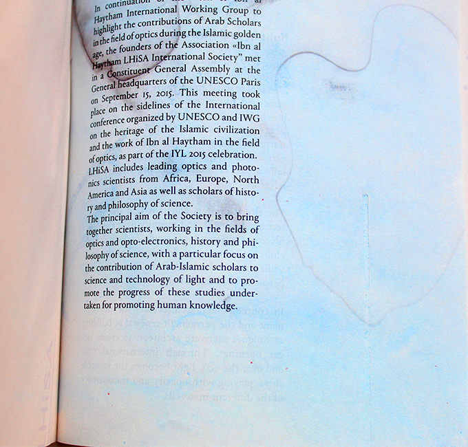
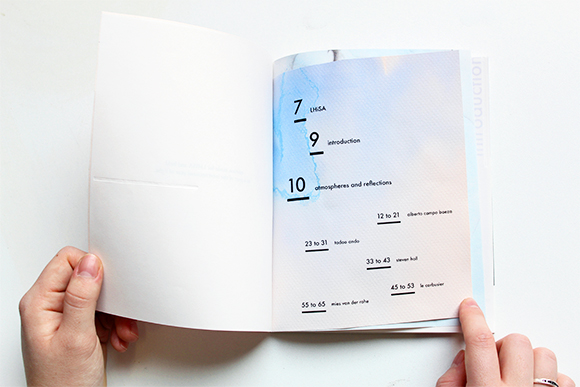
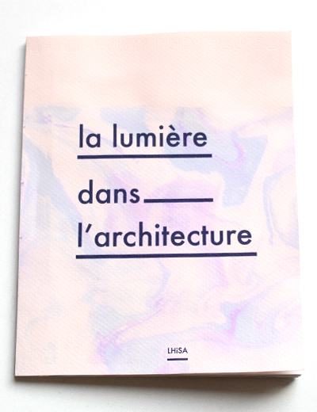
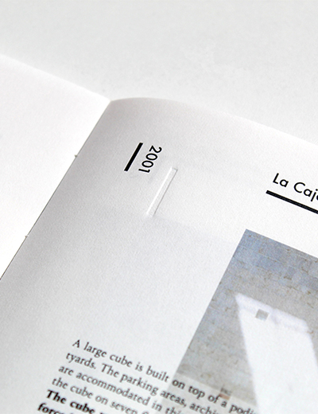
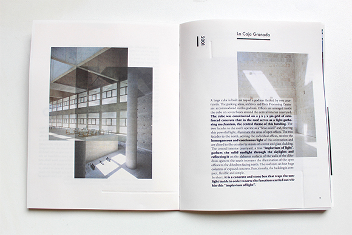
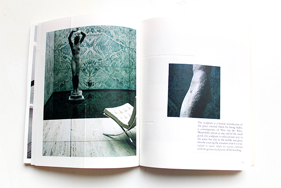
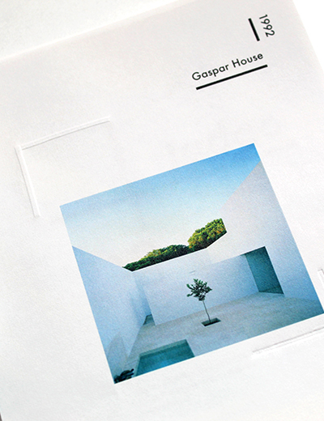
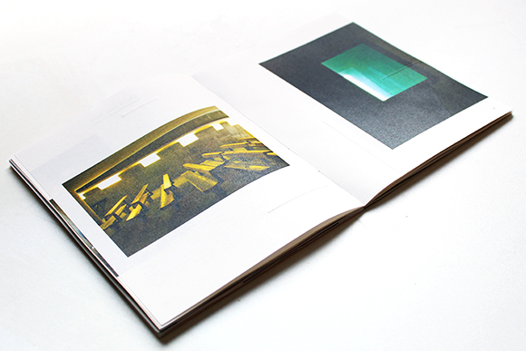
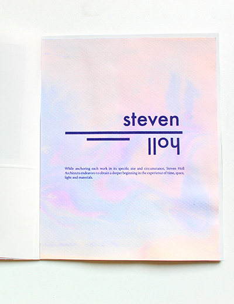
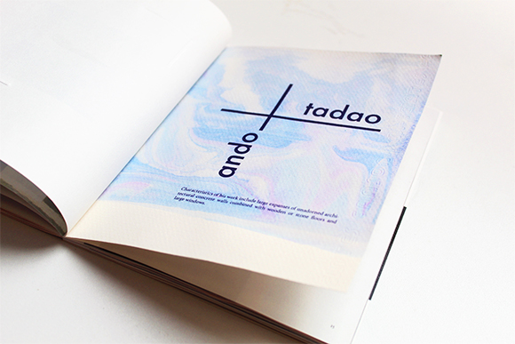

Light in architecture
Dimensions 148 x 185 / open—296 x 185
Printed on 80g paper—Adhesive binding
Toulouse—February 2017
Light is an invariant of architecture, it defines and signals a place, whether by the movement of the sun or artificial lighting
inside or outside. For centuries, light has received multiple interpretations: from a symbol of truth to a symbol of spirit
and divinity, it has also been associated with the concepts of consciousness and life. Indeed, it seems that light has been
the subject of symbolic interpretations since human beings began to believe in the afterlife. Therefore, it appears coherent
that the architect seeks to work and to magnify the light through his constructions. In contemporary architecture, the constant
development and renewal of architectural techniques motivates architects to create ever larger openings. This edition is produced
for LHiSA as part of the International Year of Light. At first sight, plastic processes seem to be at the opposite of architecture
rigor, and yet analogies are possible thanks to the theme of light. The edition proposes an echo between a fluid universe
a very constructed content. Throughout the pages the texts and visuals are always formatted so they echo the kind of architecture
mentioned. On each pages, embossing elements come to punctuate the contents more or less subtly and materialize a discreet
diffusion. It is also the guiding thread from the beginning to the end and the only element that spread through the object.









